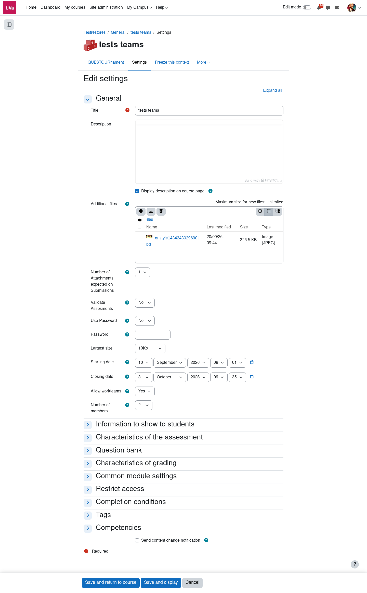
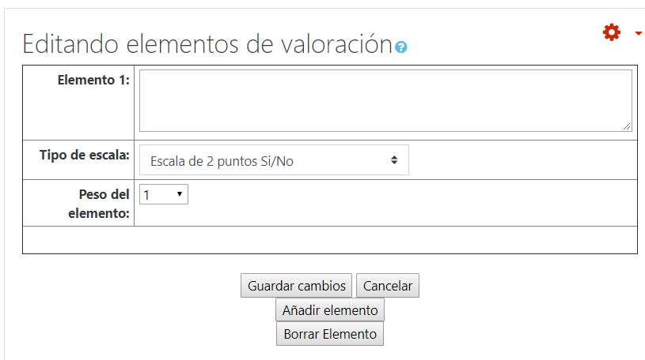
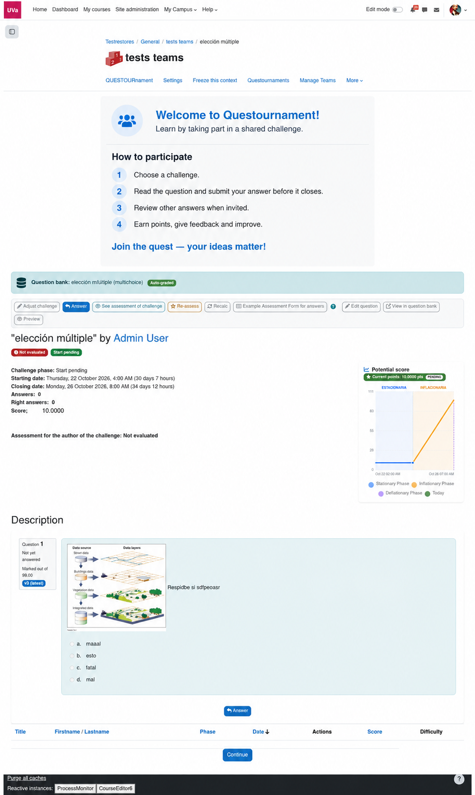

Enmarca
Explica el contexto que el grupo necesita para dar un buen primer paso.
Parte de un objetivo, crea una arena de desafíos y ofrece una forma clara y justa de contribuir. La configuración inicial ya es suficiente para empezar.
Añade Questournament a un tema del curso como cualquier actividad Moodle. Ponle nombre, historia y duración.

Explica el contexto que el grupo necesita para dar un buen primer paso.
Elige fechas, límites de respuestas, puntos y participación individual o por equipos.
Decide si el alumnado puede proponer retos y formar parte del equipo de contenidos.
Una buena guía es breve, concreta y compartida antes de la primera respuesta. Describe qué significa una respuesta útil, clara o convincente.

Modela el tipo de respuesta que quieres recibir. Después, deja que el grupo tome el relevo.

Consulta el recorrido de estudiantes y docentes.